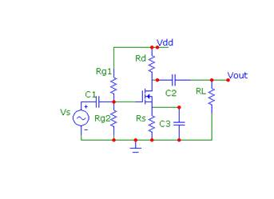

K.L. E. Society’s
B.V. Bhoomaraddi College of Engineering & Technology, Hubli -31
Department Of Electronics and Communication
7.5.1 Title of the experiment: MOSFET as an Amplifier
7.5.2 Aim of the experiment: To design a MOSFET as an amplifier and to plot the gain
and phase frequency plot.7.5.3 List of components/equipments required:
Items
Specifications
Quantity
MOSFET IRF-540
Refer data sheet
1
Resistors
As per design
1 each
Potentiometer
1Mohm
1
Capacitors
0.1microF,100microF
1 each
CR0,Signal generator
-
1
7.5.4 Experimental Setup : 
7.5.5 Theoretical background:
The main necessary criteria for the design of MOS amplifier circuits is the establishment of an appropriate dc operating point for the transistor and make sure that it operates in the saturation region. The best technique to bias it is by fixing Vg and connecting source resistance. From the circuit diagram,
Vg = Vgs + Rs Id ---------> (1)
Here resistor Rs act as negative feedback which stabilize the bias current Id. Suppose Id increases , since Vg is constant and eq(1) indicates Vgs has to decrease. This in turn results in a decrease in Id, a change that is opposite to that initially assumed. Thus Id remains constant and hence Rs acts as a degeneration resistance.
The id vs vgs characteristics is shown below,
The intersection of the straight line with the curve gives the dc bias point. The changes in Id is small with the change in Vgs which is desired.
Design : To design an amplifier of desired gain ‘A’.
- Initially the following specifications of a MOS are obtained,
- The transconductance of MOS (gm) is given by,
gm = 2 Id /( Vgs – Vt)
- The ouput resistance (ro) in saturation region , values of k’n , W , L , Vt and also dc drain current Id are noted from the data sheet.
- The overdrive voltage Vov=(Vgs-Vt) , drain voltage ,gate voltage and source voltages are obtained by,
Id = (1/2)k’n(W/L)(Vgs-Vt)^2
Vd = Vdd -Id Rd
Vg = Vs + Vgs
Vg = Vdd * Rg2/(Rg1+Rg2)
Vs = Vdd-IdRd-Vds
- The resistor values are obtained as follows(RL is assumed)
Gain(A) = - gm(Rd || RL || ro)
Rs= Vs/Id
- Since Ig=0, Rg1 and Rg2 are selected sufficiently high. (Take Rg2 as pot of 1Mohm)
- The coupling capacitors C1 and C2 are taken as 0.1microF and a bypass capacitor C3 of 100microF is chosen.
- The supply voltage is taken around 9v-15v .
7.5.6. Procedure :
- The circuit connections are as shown.
- The input and output voltages are noted for various frequencies and gain is calculated.
- Plot the gain against frequency.
7.5.7. Formulae Required: The gain is calcuated by,
A=-gm(Rd || RL || ro)
7.5.8. Tabulation:
f(Hz)
Vi(volt)
Vo(volt)
Gain(A)
7.5.9. Nature of graph: Refer figure 7.b
7.5.10. Specimen Calculation: Refer design above
7.5.11. Conclusion: The gain remains constant at mid frequency region where as it varies at lower and higher frequencies.


Copyrights © Department Of Electronics and Communication, BVBCET.
Powered By Techminds,BVBCET.